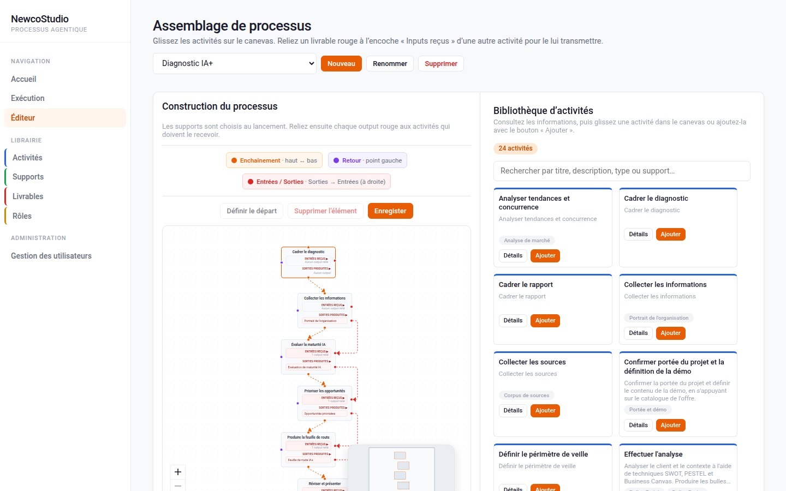
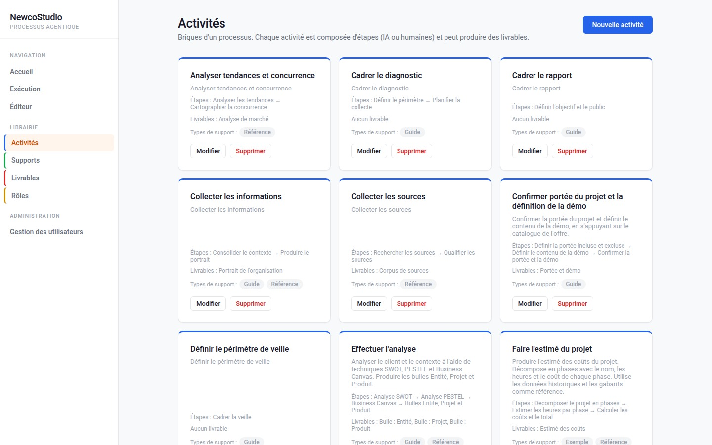
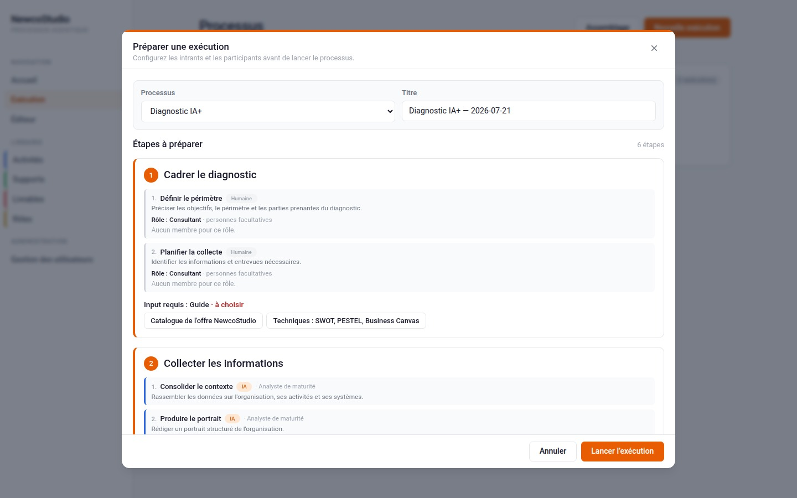

La plateforme Newco : vos processus d'affaires, exécutés par l'IA — sans perdre le contrôle.The Newco platform: your business processes, run by AI — without losing control.
Vous décrivez un processus d'affaires une seule fois. La plateforme l'exécute ensuite à la demande : des agents IA spécialisés font le travail répétitif, et vos experts valident aux points de décision. Chaque étape est tracée, réutilisable et gouvernée.You describe a business process once. The platform then runs it on demand: specialized AI agents do the repetitive work, and your experts approve at decision points. Every step is traced, reusable and governed.
Un moteur commun. Des solutions uniques. Le même moteur générique se configure pour prendre la forme requise par chaque organisation.One common engine. Unique solutions. The same generic engine is configured to take the shape each organization needs.

Quatre idées simples, un contrôle total.Four simple ideas, total control.
La plateforme repose sur un principe clair : décrire une méthode de travail une fois, puis la laisser s'exécuter de façon fiable, encore et encore.The platform rests on a clear principle: describe a way of working once, then let it run reliably, again and again.
Un processus visuelA visual process
Vous assemblez les étapes de votre processus dans un éditeur visuel, comme un plan de travail.You assemble your process steps in a visual editor, like a work blueprint.
IA ou humainAI or human
Chaque étape est confiée à un agent IA spécialisé ou à un rôle humain qui valide.Each step is assigned to a specialized AI agent or a human role that validates.
À la demandeOn demand
Vous lancez une exécution ; la plateforme suit la méthode, étape par étape, sous votre supervision.You launch a run; the platform follows the method, step by step, under your supervision.
Des livrables prêtsReady deliverables
Chaque exécution produit des livrables structurés, formatés et traçables.Each run produces structured, formatted and traceable deliverables.
Des blocs de travail éprouvés, prêts à réutiliser.Proven building blocks, ready to reuse.
Chaque étape d'un processus s'appuie sur une « activité » : une unité de travail bien définie, avec ses instructions, ses gabarits et ses livrables. Ces activités s'organisent en dossiers et se réutilisent d'un processus à l'autre.Each process step relies on an "activity": a well-defined unit of work, with its instructions, templates and deliverables. These activities are organized into folders and reused across processes.
Modulaire et réutilisableModular and reusable
On assemble des blocs déjà validés au lieu de repartir de zéro à chaque projet.You assemble already-validated blocks instead of starting from scratch every time.
Organisée en dossiersOrganized in folders
Vos méthodes de travail sont classées, retrouvables et faciles à faire évoluer.Your working methods are sorted, findable and easy to evolve.

Des agents IA font le travail. Vos experts gardent le dernier mot.AI agents do the work. Your experts keep the final say.
Avant chaque exécution, vous voyez exactement qui fait quoi : quelles étapes sont confiées à l'IA, lesquelles reviennent à un rôle humain, et quelles informations entrent dans le processus. Rien ne se décide dans votre dos.Before every run, you see exactly who does what: which steps go to AI, which go to a human role, and what information feeds the process. Nothing happens behind your back.
Agents IA spécialisésSpecialized AI agents
Chaque étape est confiée à un agent conçu pour une tâche précise, avec ses instructions propres.Each step is handled by an agent built for one precise task, with its own instructions.
Points de validation humaineHuman checkpoints
Vos experts approuvent, ajustent ou renvoient le travail aux moments clés.Your experts approve, adjust or send work back at the key moments.

Tout ce qu'il faut pour automatiser en confiance.Everything you need to automate with confidence.
Étapes connectéesConnected steps
Les résultats d'une étape alimentent la suivante, y compris avec des retours en arrière pour révision.One step's results feed the next, including loop-backs for review.
Génération en deux tempsTwo-phase generation
La plateforme prépare d'abord un plan, puis le contenu — pour un résultat structuré et prévisible.The platform first drafts a plan, then the content — for a structured, predictable result.
Révision et versionsReview and versions
Un assistant de validation permet d'ajuster chaque livrable, avec un historique des versions.A validation assistant lets you refine each deliverable, with version history.
Niveaux d'intelligenceIntelligence levels
Vous choisissez le fournisseur et le niveau de puissance IA selon l'enjeu et le budget de chaque étape.You choose the provider and AI power level based on each step's stakes and budget.
Connectée à vos systèmesConnected to your systems
La plateforme se branche à vos systèmes existants — SharePoint, bases de données, API — pour lire et écrire là où vivent déjà vos données.The platform connects to your existing systems — SharePoint, databases, APIs — to read and write where your data already lives.
Conformité validée par l'IAAI-validated compliance
Un agent de contrôle vérifie chaque livrable au regard de vos normes (ISO), réglementations et politiques internes avant sa diffusion.A control agent checks every deliverable against your standards (ISO), regulations and internal policies before it goes out.
Livrables structurésStructured deliverables
Chaque processus produit des livrables clairement définis — rapports, analyses, propositions, formulaires — prêts à l'emploi.Each process produces clearly defined deliverables — reports, analyses, proposals, forms — ready to use.
Gabarits cohérentsConsistent templates
Chaque livrable respecte un format défini selon vos gabarits, prêt à partager avec vos clients ou vos équipes.Each deliverable follows a defined format based on your templates, ready to share with clients or teams.
Traçables et gouvernésTraceable and governed
On sait toujours quelle étape a produit quoi ; la conformité est intégrée à la source, pas ajoutée après coup.You always know which step produced what; compliance is built in at the source, not bolted on.
Un modèle génère une réponse. Newco produit un résultat fiable, répétable et gouverné.A model generates an answer. Newco produces a reliable, repeatable, governed result.
Claude, ChatGPT et les autres modèles peuvent faire partie de la solution. Newco fournit l'architecture, les connexions, les règles et la gouvernance qui les transforment en véritable processus d'affaires.Claude, ChatGPT and other models can be part of the solution. Newco provides the architecture, connections, rules and governance that turn them into a real business process.
Ancré dans votre contexteGrounded in your context
Connecté à vos documents, données, politiques et méthodes autorisées — pas seulement au texte d'une conversation.Connected to your authorized documents, data, policies and methods — not just the text of a conversation.
Un processus completA complete process
Collecter, analyser, appliquer des règles, faire valider par un humain, générer le livrable et enchaîner l'étape suivante.Collect, analyze, apply rules, get human validation, generate the deliverable and trigger the next step.
Gouverné et fiableGoverned and reliable
Droits d'accès, traçabilité, supervision humaine et validations : des résultats vérifiables, pas improvisés.Access rights, traceability, human oversight and validations: verifiable results, not improvised ones.
Une valeur mesurableMeasurable value
L'usage de l'IA est relié à des indicateurs concrets : temps économisé, qualité, conformité, réduction des erreurs.AI use is tied to concrete indicators: time saved, quality, compliance, fewer errors.
Prêt à automatiser un premier processus ?Ready to automate a first process?
Nous vous montrons la plateforme sur un cas concret tiré de votre réalité — pas une démo générique.We'll show you the platform on a concrete case from your reality — not a generic demo.